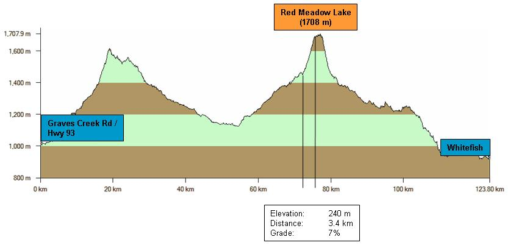
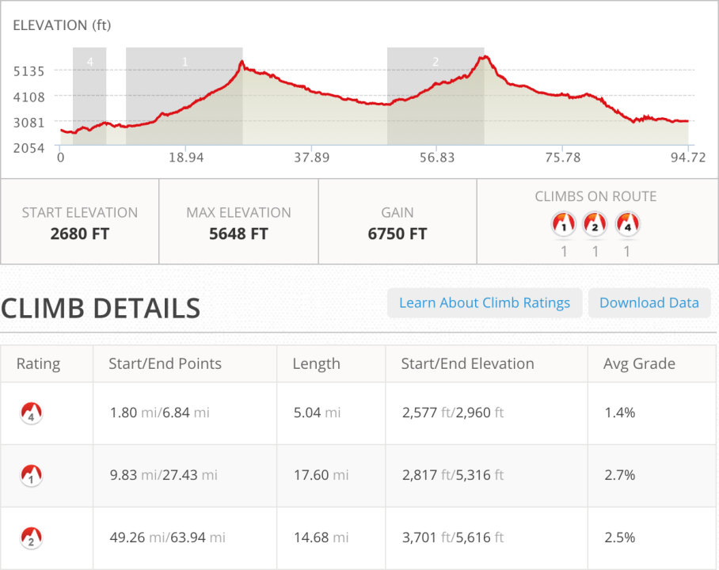
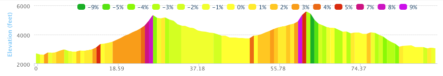
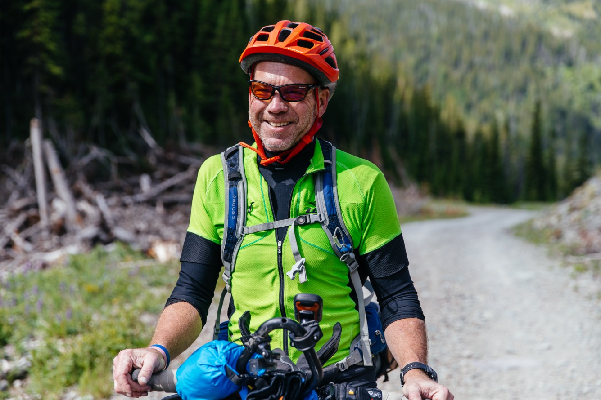
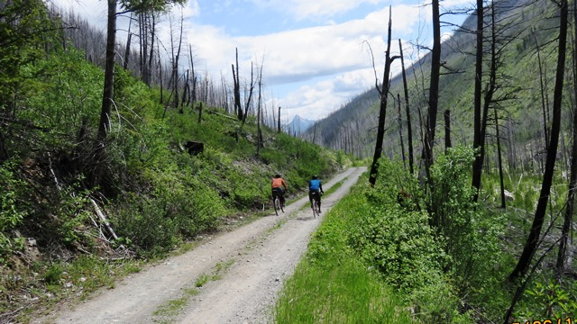
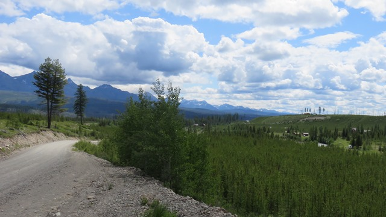
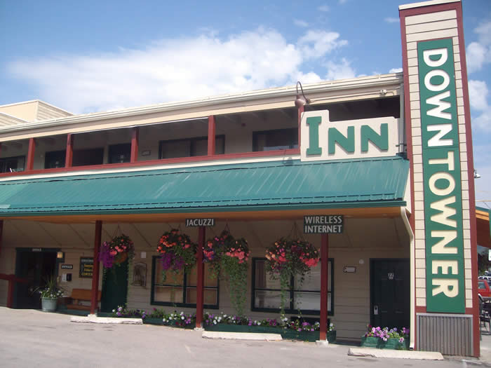

For someone who doesn't like hills you picked a strange race to join
Eureka to Whitefish, MT
This was my longest day so far and it had two pretty significant climbs. It was also the first time I had other riders around me. The cover photo above is from the approach to Red Meadow Lake. Everyone who passed me eventually walked.
Once again - Mornings are for going up - twenty plus miles



Whitefish Pass
I was starting to see people going about my speed. This was a two pass trip and then a long trip into Whitefish. After I came down out of the mountains in Canada I started the day in Eureka at 2,600 feet. The first pass was Whitefish pass and I rode along with a couple guys for a while and for the first time I could climb the grade. It ended up being one of the easier passes (only 15 miles!) but it still felt good.

The opening in the mountains above was where I was heading.

Long gradual hill. Nothing too steep until the top.

It didn't take long for some of the riders to be far off into the distance.

It's not all great scenery. Sometimes you just slog up a hill.
Downhill from Whitefish Pass
Various groups were out taking photos and videos so I got a shot of myself.
Photo from theradavist.com
This dude already had stories for days.Photo from theradavist.com
A lot more pictures there.

The section between the two mountains was a good place to stop and eat lunch.

Red Meadow Lake
The second climb was to Red Meadow Lake. It had many false tops. This was the first place almost everyone stopped riding and walked. I was certainly used to it but was glad to see others walking. I walked about 3 miles per hour.

As I approach the top of the pass by the lake it turned dark so I put on my rain gear. Stopped to speak with a Iraq war veteran who was camping with his family. He gave me some water and I think I powered down a Cliff bar and was on my way. Rain didn't hit until later. The descent from Red Meadow was fast and rocky. Fun ride down but when I got to the bottom my tire was feeling pretty soft.
 Still some snow in the peaks by Red Meadow Lake
Still some snow in the peaks by Red Meadow Lake
When I reached the bottom of the road after Red Meadow Lake by Upper Whitefish Lake I realized I had made a major miscalculation. The sign told me the truth. Whitefish was still 20 miles further and I had a tire that wasn't really holding air. I could get 2 or 3 miles but then had to refill the front tire. In addition the "Upper" in the title of Upper White Fish Lake was misleading. During the 20 miles I did almost as much upping as downing. Finally reached Whitefish and was just about the last person to get into the bike shop, Glacier Cyclery & Nordic . All I needed was a new tube but I was happy for them to put it on. It was closing in on 7pm on a Sunday night and the bike shop guys wanted to go home. They were good about it and sent me next door for some pizza at Second Street Pizza . They bike shop guys had to drag me out of the there so they could go home. The chain motels were a few miles away so I stayed at the Downtowner. Barely got to the room and I was out like a light by 9:30.

To go places and do things that I've never done before – that’s what living is all about. See full screen mapText by Jim O'Brien
Photographs by Jim O'Brien unless otherwise noted
More of
my TD pictures on Flickr.